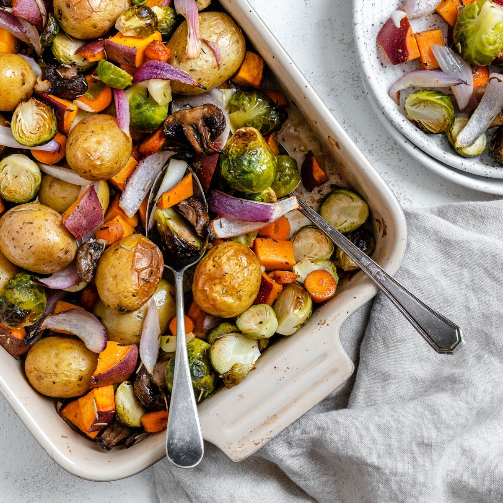

Roasted Veggies

Description
Warm roasted veggies come together with perfect curly kale and a sweet and tangy dressing for a salad that will be perfect on your Thanksgiving dinner table this year.
Ingredients
For the Roasted Vegetables:
- 1 Medium Sweet Potato cut into 1/2 inch cubes – this is approximately 1 cup
- 6 Ounces Brussels Sprouts trimmed and cut in half – this is approximately 1 1/2 cups
- 1 Medium Red Onion sliced
- 2 Cloves Garlic mashed
- 2 Tablespoons Olive Oil
- 1 Teaspoon Kosher Salt
- ½ Teaspoon Ground Black Pepper
For the Dressing:
- ⅓ Cup Olive Oil
- 2 Tablespoons Apple Cider Vinegar
- 2 Tablespoons Pure Maple Syrup
- 1 Tablespoon Dijon Mustard
- 2 Cloves Garlic mashed
- ½ Teaspoon Dried Thyme
- 1 Pinch Sea Salt to taste
- 1 Pinch Ground Black Pepper to taste
For the Salad:
- 3 Cups Curly Kale Leaves chopped with the stems removed and loosely packed
- 1 Pinch Sea Salt this will be used to help soften the kale!
- ½ Cup Dried Cranberries
- ½ Cup Parmesan Cheese freshly grated
Steps
Step 1
- Bake, covered, for 45 minutes. Uncover and bake 10 to 15 minutes more or until golden and bubbly. Let stand 15 to 20 minutes. Sprinkle with fresh basil before serving.
Step 2
- Next, prepare the roasted veggies. Wash and chop the sweet potato, Brussels sprouts, and red onion, and add them to a bowl alongside the mashed garlic, sea salt, olive oil, and black pepper. Toss them until the veggies are fully coated in the oil and seasonings, and then transfer the veggies to the baking sheet.
Step 3
- Place the tray with the veggies in the oven for 20-25 minutes, until the veggies have roasted and have slight char marks on them.
Step 4
- Then, while the veggies are in the oven, prepare the Maple Dijon Vinaigrette by whisking the dressing ingredients together, in a small bowl. Taste and adjust the salt and pepper as needed, then set it aside until the rest of the salad is complete.
Step 5
- Next, prepare the kale. Wash and chop the curly kale, removing the stems from the leaves. Chop the kale into small pieces and add it to a large bowl.
Step 6
- Then, add a pinch of sea salt to the kale and massage the kale with your hands for 1-2 minutes to break up the fibers.
Step 7
- Once the kale has softened, remove the warm roasted veggies from the oven and add them to the bowl with the kale, followed by the dried cranberries and grated parmesan cheese.
Step 8
- Finally, pour the dressing over top of the salad and use your clean hands to toss it, to ensure that all of the veggies and kale are evenly coated in the dressing.
Step 9
- Once it's done, serve it and enjoy! Store any leftovers in an airtight container, in the fridge, for up to three days.